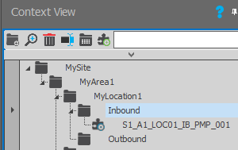

The object model datasource enables you to enhance your existing wizards, by adding SCADA configuration to them.
configuration to them.
Its main function is to save you engineering time when bulk creating objects, such as items of equipment, which require similar SCADA configuration.
It saves you SCADA engineering time by allowing you to reliably duplicate objects that can have all or most of their SCADA configuration pre-configured, such as their scanning, logging and alarming.
The objects that you can create will typically be items of equipment, like pumps or motors and can be anything that you have already created a wizard to represent.
You can also use the
When creating an object template or an object instance, you are able to add one or more attributes or searchable strings or identifiers to them that you can use to filter or group the objects that you deploy in the Context View window.
It does not help you create the graphical representation of the object, it requires a working instance of a wizard to begin.
It does not help you create the SCADA configuration required by this object, it requires that all the necessary agents already exist for the wizard instance that you have selected and that these agents have already been configured.
Up to now wizards have allowed you to create animated graphical representations of your objects, such as pumps and motors - so that you can duplicate them as needed in your SCADA process and linking them to the required process values.
But any SCADA-related configuration, such as the required scanning, alarming and logging of this object was left up to you to manually implement for each instance of this wizard.
Now by using the object model datasource, you only need to implement the required SCADA-related configuration for one of your objects (a fully configured instance of a wizard) from which you can create a Template, in which you specify both the graphical representation/s and the required SCADA configuration for this object.
Tip: If you have an object for which you have created identical wizards with different graphical representations, you can associate these other wizards to this object template.
Then you can implement instances of this template, which both creates and configures the necessary agents required by this object and provides the required graphical representation of it too, to reliably duplicate pre-configured objects.
In other words the salient idea about the object model datasource is the mass reuse of objects; where each object has a graphical component, much like the existing wizards and a SCADA component, which incorporates the scanning, alarming and logging of tags. It can therefore also be thought of as a bulk SCADA configuration tool, which also allows you to standardise the SCADA configuration of your equipment.
The template and object instances only reference the wizard they do not encapsulate it so when you drop an object instance on a graphic form - it is a wizard instance that provides SCADA configuration. So you can interact with this wizard instance as normal - therefore if you update the original wizard you can update this wizard instance if you want to.
Note: It is also possible for an object template to incorporate one or more existing object templates within this template, for instance by adding a faceplate to a pump etc. So you need to create your lower-level or commonly used object templates first.
Practical example:
Consider an industrial plant has a large number of similar pumps made by the same manufacturer, each of which had some characteristics that differed such as their power calibration.
The engineer would initially create a wizard that provides the graphical representation of this pump.
Then the engineer would implement the wizard and create the necessary SCADA configuration for this pump, such as its required scanning, logging and alarming.
The engineer would then test that this SCADA configuration was working correctly.
Then the engineer would create a template from this working wizard, ensuring that the characteristics that differed between these pumps would be substitutable.
Using this template the engineer would then create multiple instances of the pump, changing each of their differing characteristics as needed.
So each instance of this pump would then have their scanning, logging and alarming pre-configured.
You need a fully configured working instance of a wizard. In other words an instance of a wizard that you have fully configured its required SCADA configuration, so that this can be duplicated for all your other objects.
Tip: Take the necessary time that you need to test that this wizard has been fully configured and is working optimally and is being correctly scanned and/or logged and/or alarmed. Since any mistakes or omissions that you make will also be duplicated!
Take a wizard, ideally an instance of a wizard on a graphic form, that is working as required and create a template from it, which incorporates the graphical components of the wizard (and any substitutions that it uses) along with SCADA configuration, from which you can create numerous instances each of which will create their own unique tags, which will be scanned, logged and/or alarmed, as specified by the template.
For instance if you have created a wizard for a pump, you can create a template for this pump that not only displays the pump and its relevant values on a graphic form but which creates the tags that it requires and performs the necessary scanning, logging and alarming that you require.
IMPORTANT: Creating templates is a task for advanced users who are fully aware of how their SCADA system (Agent Server) is configured. However, creating their instances is a lot easier.
Note: Since a template refers to an existing wizard, if the referenced wizard is deleted or modified, this does not affect the existing instances of this template that have already been added, it only affects the instances that you add after this.
You also have the ability to create child templates so that you can create a template that uses an existing template. So these child templates form the basic or commonly used building blocks from which you can add to your other templates.
You can also use the
You do not have to create all the object model templates that you require, since the object model datasource can install global or system templates, which are immediately available after installation.
These global or system templates are added to the  System folder of the
System folder of the  Templates folder of the
Templates folder of the  Object Model datasource in the Datasources category of the Enterprise Manager.
Object Model datasource in the Datasources category of the Enterprise Manager.
Furthermore to assist you and your users in selecting the appropriate template, both the global templates and the templates that you create can be further classified into sub-folders, for ease of reference.
By default, all templates  created by users are added to the root User folder of the Templates folder of the Object Model datasource in the Datasources category of the Enterprise Manager.
created by users are added to the root User folder of the Templates folder of the Object Model datasource in the Datasources category of the Enterprise Manager.
Furthermore, while you are unable to move or delete the global or system templates and their sub-folders in the System folder of the Templates folder of the Object Model datasource of the Enterprise Manager in the Designer. However, you can do this within Windows Explorer and then the next time that the SmartUI Server loads it will obtain the required templates and their folder structure.  More details:
More details:
Use a wizard instance on a graphic form that you have already configured, which is working EXACTLY the way you want it to work and for which you have already configured the necessary SCADA configuration (the scanning logging and alarming etc.) and any other agents that this object needs configured. For details, see Creating or Editing an Object Template.
IMPORTANT: You need to ensure that the required SCADA configuration of this wizard instance is EXACTLY what you require, since this will be copied exactly; in other words: garbage in = garbage out!
Tip: If you keep the SAME substitution names as those used in the wizard, this will make it easier to implement your instances, since you will only need to configure these substitutions ONCE, otherwise you will need to specify substitutions both during the SCADA Configuration and Graphical Substitution stages.
Then create a template from it, which incorporates the graphical components of the wizard (and any substitutions that it uses) along with SCADA configuration that you specify, from which you can create numerous instances each of which will create their own unique tags, which will be scanned, logged and/or alarmed, as specified by the template.
Note: In order to create an object template you need to be fully aware about how your SCADA system (Agent Server) is configured.
Once you create an object template then any instance that you create of this template will provide the referenced wizard to provide the graphical components and uniquely configure the specified SCADA configuration for the process values that you specify for each object. For details, see Creating an Object Instance.
You can either deploy an instance immediately or you can partially or fully deploy this object later. For details, see Deploying an Object Instance.
When creating an object template or an object instance, you are able to add one or more attributes or searchable strings or identifiers to them that you can use to filter or group the objects that you deploy in the Context View window.
In other words these provide user-friendly terms that can be used to identify this object, such as equipment Type, whose value is motor or valve etc. or perhaps the power specification, such as 'kWh' and then specify the required value for each object.
Once an instance of an object template has been created, you can view both the template-specific and object-specific attributes have been defined and their configured values for this object. For details, see Viewing the defined attributes of an Object Instance.
For more details, see Context View tool window.
(missing or bad snippet)Creating an object instance in a node of the Default context can be particularly useful when its name and substitution/s use a predefined naming convention that specifies the context in which the instance is created. For details, see Creating contextually sensitive object instances.
